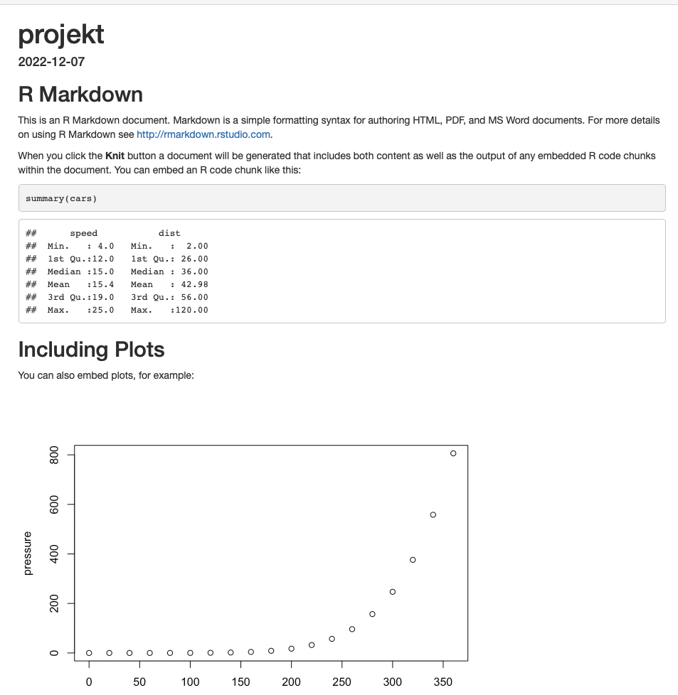

10 Komunikácia výsledkov
Zhrňme si, čo všetko už doteraz vieme
- poznáme syntax Rka
- vieme načítavať datasety z rôznych súborov a upravovať ich
- pozerať sa na rôzne podvzorky
- vieme zobrazovať a charakterizovať pravdepodobnostné rozdelenia premenných (stredná hodnota, variancia, histogram, funkcia hustoty…)
- vieme zobrazovať a charakterizovať súvzťažnosť rôznych premenných (korelácia, lineárna regresia…)
- poznáme základy štatistického testovanie hypotéz a vieme interpretovať výstupy týchto testov
10.1 R Markdown
Do skladačky nám ešte chýba nejaký elegantný spôsob ako všetky tieto veci robiť a spísať ich do uceleného zmysluplného textu, ako tieto veci odkomunikovať. Môžeme separátne urobiť štatistickú analýzu a potom nakopírovať tabuľky a obrázky do textového editora, v ktorom to upravíme. Toto je však dosť prácne. Pridáte jeden riadok do dátovej tabuľky a celé to môžete prerobiť odznovu. Ak chcete zmeniť nejaký aspekt výberu dát na začiatku (napr. obmedzím sa na nejakú zaujímavú a relevantnú podvzorku dát), tak znova to všetko môžete prerobiť. Rko nám však ponúka veľmi elegantnú alternatívu. Môžeme totiž písať dokumenty (html, pdf, docx) a robiť analýzu naraz a to priamo v Rku. Skrátka si výrazne uľahčíme (pos slovensky) workflow. Sú aj ďalšie veci, ktoré Rko vie: napr. produkovať aplikácie alebo webovské stránky. Aj táto webstránka, na ktorú sa práve pozeráte je vyrobená priamo v RStudio.
Otvoríme si nový RMarkdown dokument.
Uložíme ho (teraz som si uložil ako projekt.Rmd).
Takto potom vyzerá.
Po štuknutí na tlačítko Knit dostaneme takýto html dokument, ktorý je uložený v našom priečinku.

Syntax je priamočiara a stačí zopár základných pravidiel a budeme vedieť väčšinu užitočného. Do textu pridávame chunk-y, to sú kusy kódu. Napríklad tu sú chunky pre zobrazenie sumáru datasetu cars ako aj chunk na zobrazenie obrázka. Symbol ## slúži na definovanie podkapitoly, vidíme ako pridať odkaz na webstránku ako aj ako zvýrazniť text.
Užitočné vlastnosti chunkov sú tieto
echo- či sa zobrazí kus kódu alebo nie,cache- či sa má znovu vykonať kus kódu (niektoré časti môžu dlho trvať, tak ich spustíme len raz),warning- vie skryť upozornenia,eval- či sa kus kódu má vykonať,message- vie skryť správy,error- ak nastavené na TRUE tak pokračuje v kompilácii aj keď narazí na chybu.
Pre chunky s obrázkami sú to
fig.show- či sa zobrazí obrázok alebo nie,fig.cap- popisok obrázku,out.width- šírka obrázka,fig.asp- aspect ratio,fig.align- zarovnanie (centerak na stred).
Je užitočné začať tu.
10.2 Cvičenia
Inštrukcie na úspešné skompilovanie:
- Stiahnite si súbor do adresára v ktorom budete pracovať
- Zatvorte RStudio a otvorte Rmd súbor priamo z tohoto adresára. Teraz Vám správne nastaví
current directory, toto skontrolujete príkazomgetwd() - Do Vášho adresára nahrajte prázdny priečinok s menom
tables. Do tohoto sa potom nahrá súbor s tabuľkami. - Nainštalujte si knižnice
pacmanaeatATApomocou funkcieinstall.packages() - Stlačte tlačíko Knit
- Doplňte časti chýbajúceho kódu.
Cvičenie 10.1 Napíšte v RMarkdowne kratučký tutoriál, ktorý vysvetlí ako sa používa funkcia plot() v R. Postupne pridávajte komplikáciu za komplikáciou, aby bolo z kódu zreteľné, ako táto funkcia funguje.
Cvičenie 10.2 Napíšte v RMarkdowne prvé dve cvičenia z Vašej poslednej domácej úlohy.